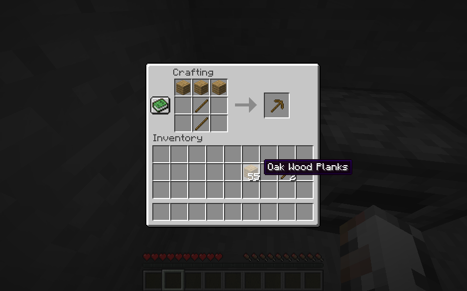

The first thing you'll want to do when you spawn in is to go find a tree and pucnh the tree until wood drops. After you collect about 16 logs of wood turn them all into planks.


Take the planks and fill up your 2x2 crafting grid to make a crafting bench. This is what you will use to craft everything else in the game!

After you make the crafting bench its time to make yourself a pickaxe. Arrange two planks on top of eachother like so.

Once you have your planks and sticks make the following shape in your crafting bench. This will make you a wooden pickaxe
Upon making a pickaxe go find some stone to mine. this will serve as